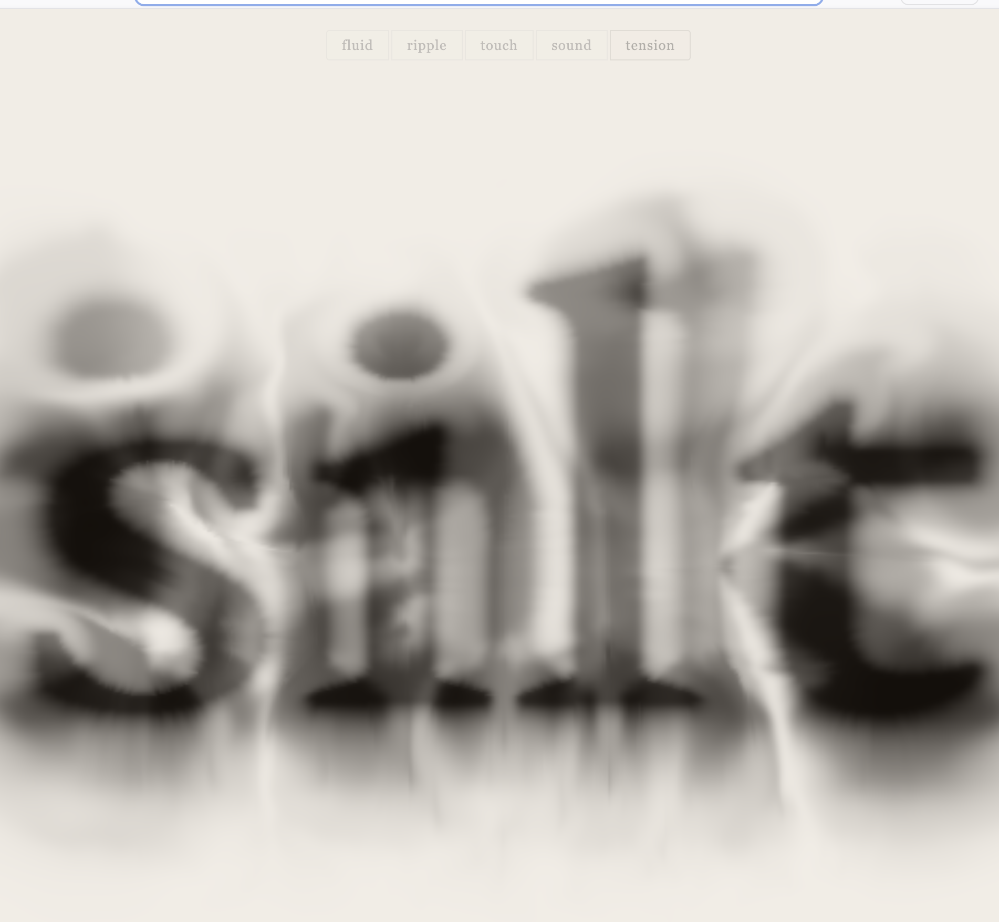

Welcome
I teach writing and digital media at Texas Christian University, and I build the things I ask my students to build. This site is one of them.
About Me
I am building this portfolio alongside the students in WRIT 40363 this term, one lab at a time, in the same order they do. When something breaks here, it is usually breaking in their files too.

Skills
-
HTML
Semantic structure, accessible links, captioned figures. The part of this stack I have taught longest.
-
CSS
Still learning the token-based approach my students meet in Lab 05. I have written plenty of CSS the other way.
-
Writing for the Web
Front-loaded sentences, link text that names its destination, prose that survives being skimmed.
-
Digital Literature
Experimental work made in the browser, where the interface is part of the poem rather than a frame around it.
My Work
-
Personal Portfolio
The site you are reading, built from scratch in HTML and CSS alongside the students in WRIT 40363.
Contact
The most reliable way to reach me is through the profile I already keep up in public.